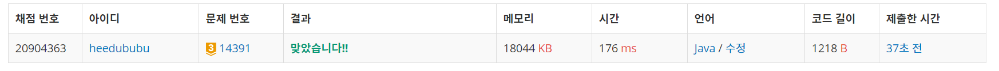
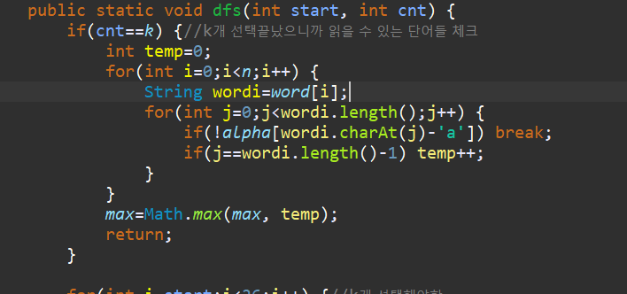

문제
https://www.acmicpc.net/problem/1062
( ᐛ )و 도전
0. 문제 요약
- 학생들이 읽을 수 있는지 확인할 단어 n개, 선생님이 가르칠 글자 k개.
- k는 최소 5이상(antic, 시작과 끝 단어 규칙)이어야 한다. 왜냐하면 antic도 가르치지 않는다면 읽을 수 있는 단어가 없기 때문이다.
- DFS로 읽을 수 있는 k-5개의 알파벳을 선택해 모든 경우의 수를 따진 후, 그것에 따라 n개의 단어는 몇 개 읽을 수 있는지 체크한다.
- 모든 경우의 수 중 읽을 수 있는 단어 최댓값을 리턴한다.
1. 설계
- 시작과 끝의 “anta”, “tica”는 지우고 단어들을 저장한다.
- boolean[] alpha로 antic는 true로 고정시켜놓고, DFS로 k-5개의 알파벳을 선택이 완료되면 n개의 단어 중 읽을 수 있는 개수를 체크한다.
- Math.max로 이 중 최댓값을 저장한다.
2. 구현 (성공 코드)
1
2
3
4
5
6
7
8
9
10
11
12
13
14
15
16
17
18
19
20
21
22
23
24
25
26
27
28
29
30
31
32
33
34
35
36
37
38
39
40
41
42
43
44
45
46
47
48
49
50
51
52
53
54
55
56
57
58
59
60
61
62
63
64
65
import java.util.Scanner;
/**
* @author HEESOO
*
*/
public class Main {
static int n,k;
static boolean[] alpha;
static String[] word;
static int max;
public static void dfs(int start, int cnt) {
if(cnt==k) {//k개 선택끝났으니까 읽을 수 있는 단어들 체크
int temp=0;
for(int i=0;i<n;i++) {
String wordi=word[i];
boolean flag=true;
for(int j=0;j<wordi.length();j++) {
if(!alpha[wordi.charAt(j)-'a']) {
flag=false;
break;
}
}
if(flag) temp++;
}
max=Math.max(max, temp);
return;
}
for(int i=start;i<26;i++) {//k개 선택해야함
if(alpha[i]) continue;
alpha[i]=true;
dfs(i+1, cnt+1);
alpha[i]=false;
}
}
public static void main(String[] args) {
// TODO Auto-generated method stub
Scanner scan=new Scanner(System.in);
n=scan.nextInt();
k=scan.nextInt()-5;
alpha=new boolean[26];
max=0;
if(k<0) {
System.out.println("0");
return;
}
else if(k==21) {
System.out.println(n);
return;
}
word=new String[n];
for(int i=0;i<n;i++) {
String temp=scan.next();
word[i]=temp.substring(4,temp.length()-4);
}
alpha['a'-'a']=true;
alpha['c'-'a']=true;
alpha['i'-'a']=true;
alpha['n'-'a']=true;
alpha['t'-'a']=true;
dfs(0,0);
System.out.println(max);
}
}
3. 결과

성공٩(˘◊˘)۶
flag를 사용하지 않고 다른 방식을 이용했더니 틀렸다.
4. 설명
- k 크기를 먼저 체크한다
- k는 가르칠 알파벳 수로, 무조건 5보다 커야한다. 왜냐하면 antic는 꼭 가르쳐야하기 때문에, 이보다 작으면 모순이다.
- 따라서 처음 입력받을때, 필수 antic를 제외한 새로 배울 알파벳 개수를 저장하기 위해 k=k-5한다.
- k==21은 사실 k=26을 입력받은 것이므로, 이것은 모든 알파벳을 가르친다는 뜻이다. 따라서 어떤 단어가 입력되어도 다 읽을 수 있으므로 n을 리턴하여 입력받은 단어 n개를 모두 읽을 수 있다고 출력한다.
- 위 조건에서 걸러지지 않는다면, DFS로 모든 경우의 수를 따진다.
- DFS로 k개의 읽을 수 있는 알파벳의 모든 경우의 수를 따진다
- DFS로 a~z까지 모두 체크하며 알파벳 k개를 선택한다. 이때 antic는 k개 선택에서 당연히 제외된다. 왜냐하면 새로 배우는 알파벳이 아니기 때문이다.
- antic 제외 k개 선택이 끝났으면 n개의 단어를 체크하며 읽을 수 있는지 확인한다.
- 단어 word의 알파벳을 하나씩 체크하며 배우지 않은 알파벳이라면 flag=false후 break로 탈출하여 해당 word는 카운트하지 않도록 한다.
-  처음에는 word의 알파벳 체크를 위해 위와 같이 처음 보는 알파벳이면 break로 탈출하여 다음 word로 넘어가고, break문에 걸리지 않았다는 뜻은 word의 알파벳이 모두 아는 것이므로 마지막 알파벳까지 확인을 마쳤다면 temp++하도록 짰는데, 여기서 오류가 발생했다. “antatica”인 경우 main의 substring에 의해 word에 ““로 저장되고, 이 경우 for문의 j조건에 만족하지 않아 temp++되지 않는다. 읽을 수 있는 단어임에도 불구하고 말이다.
해결 완료!
참고
- [Algorithm] 백준 1062 가르침 java https://velog.io/@leeinae/Algorithm-%EB%B0%B1%EC%A4%80-1062-%EA%B0%80%EB%A5%B4%EC%B9%A8-java